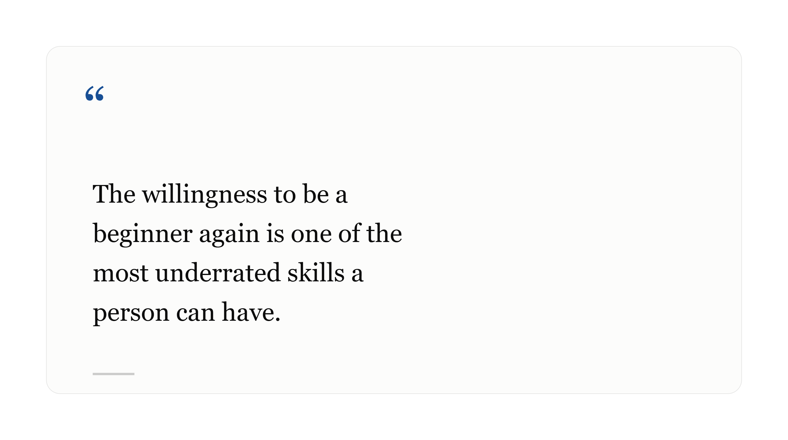

Becoming a Beginner 🌱 Again, On Purpose
By Swetha Venugopal
July 19, 2026 • 4 min read
Follow me on 
By Swetha Venugopal
July 19, 2026 • 4 min read
Follow me on 
There's a particular kind of vulnerability in choosing to be bad at something new, especially
after you've spent years becoming competent at something else. It's humbling to go from "the person people ask for help" to "the person asking all the questions."
But here's what I've come to believe: the willingness to be a beginner again is one of the most underrated skills a person can have.
Expertise in one area doesn't transfer automatically — and that's okay. Just because you're skilled in one domain doesn't mean the new one will come easily. Give yourself permission to be genuinely new at something, without treating it as a referendum on your intelligence or capability.
The beginner's mindset is a superpower 🦸♂️, not a weakness. Beginners ask questions experts have stopped asking. They notice things that have become invisible to people who've been doing something for years. That fresh perspective is valuable — don't rush to trade it away just to feel more comfortable.
Progress in a new skill isn't linear📈. There will be days where everything clicks and days where the same concept refuses to make sense no matter how many times you revisit it. That's not a sign you're doing it wrong. That's just what learning looks like, zoomed in close enough to see the texture of it.
If you're standing at the edge of something new — a new field, a new role, a new chapter — and feeling that flicker of self-doubt, take it as a good sign. It means you're doing something that actually matters enough to be scary. The people who never feel like beginners are usually the people who never tried anything new at all.

Thanks for stopping by That's it for now — but this space will keep growing, just like I am. Every post here is a small snapshot of something I've learned, questioned, or worked through, and I'm genuinely glad you took the time to read it.
If something here resonated with you, stayed with you, or made you pause even for a second — that means more to me than you know.
Stick around New posts are on the way, so if you'd like to keep up, feel free to subscribe, follow, or just check back in. I'd also love to hear from you — thoughts, disagreements, your own stories through the feedback section.
Until the next post,
Swetha Venugopal
Share this article
LinkedIn | Twitter | Email | Copy Link